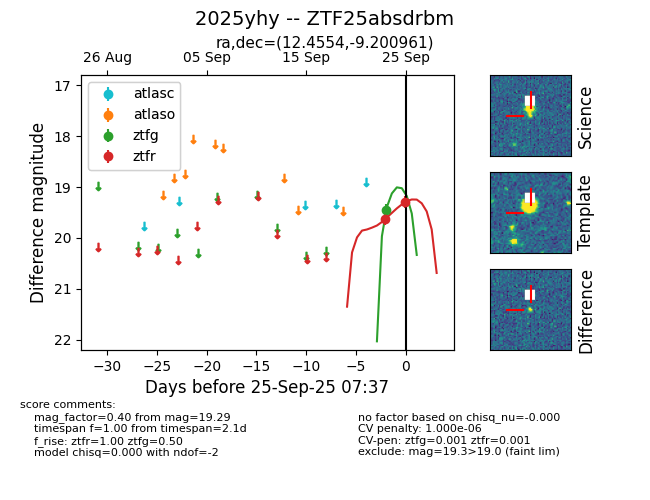
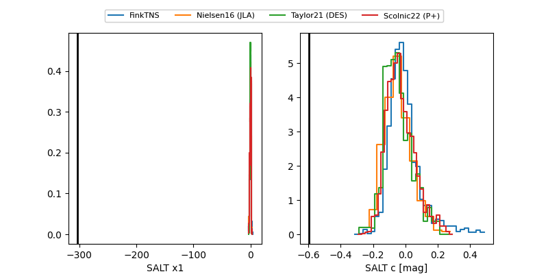

FINK: ZTF25absdrbm
Lasair: ZTF25absdrbm
ALeRCE: ZTF25absdrbm
TNS: 2025yhy
YSE: 2025yhy
ZTF25absdrbm (ztf,fink)
2025yhy (tns,yse)
equatorial (ra, dec) = (12.4554,-9.20096)
galactic (l, b) = (121.6362,-72.06864)


last ztfg=19.46, ztfr=19.29
1 ztfg, 2 ztfr detections